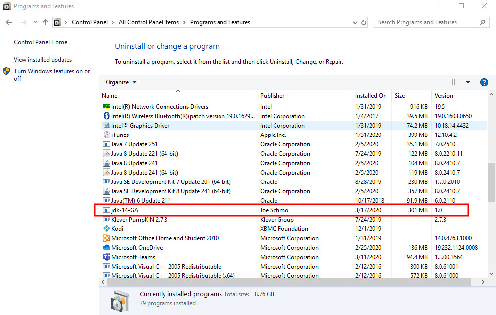
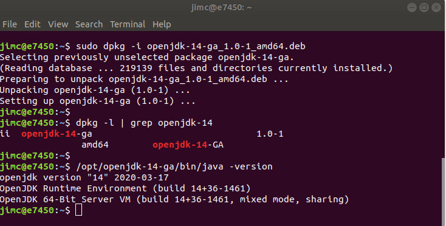

Make Your Own MSI (and RPM, DEB & DMG) with JDK14
by Jim Connors 18 March 2020
Throughout much of its long history, Java Runtime Environments for MS-Windows have traditionally been packaged up in the venerable EXE format for installation. This made for a well understood, straightforward and standard way of installing Java for individual users, unfortunately at the expense of those tasked with managing Windows systems en masse. EXE files don't necessarily play well in the Windows systems administration world where tools like Microsoft SCCM and many other capable alternatives are used. A more preferable payload is the MSI format. The equivalents in the Linux and MacOS world would be the RPM/DEB and DMG formats respectively.
To help rectify this shortcoming, some organizations have seen fit to produce their own MSI versions. Oracle for example provides an Enterprise MSI Installer for its Java SE Subscription customers with its Oracle JDK 7 and JDK 8 releases. Among the litany of Open JDK distributions, a few have also decided to package up their own MSI versions too.
JDK 14 marks the introduction of a formal incubator module called jdk.incubator.jpackage, addressing the ability to package up Java applications in native format. The full extent of the tool is far beyond the scope of this article; one of the corner cases that the jpackage tool handles is the ability to simply create native installer (MSI, DEB, RPM, DMG) versions of a complete JDK.
Examples
Let's cut to the chase and show examples on two of the three major platforms. For Windows, we'll use an Oracle JDK 14 instance located in the D:\jdk-14 directory. The following command will create a JDK 14 MSI file where the name and vendor has been specified via the -n and --vendor arguments:
D:\> jdk-14\bin\jpackage -n jdk-14-GA --type msi --vendor "Joe Schmo" --runtime-image jdk-14
There are additional directives that can be furnished fo further customize the resulting package. Upon completion of the jpackage command, a file named jdk-14-GA-1.0.msi is created. Once installed it appears in the Windows registry as follows:
In the Linux world, we'll use Oracle's OpenJDK 14 distribution. Two sample invocations follow, one to create a DEB package, the other to create an RPM:
$ jdk-14/bin/jpackage -n openjdk-14-GA --type deb
--vendor "Joe Debian" --runtime-image jdk-14
produces a file named openjdk-14-ga_1.0-1_amd64.deb
$ jdk-14/bin/jpackage -n openjdk-14-GA --type rpm
--vendor "Joe RedHat" --runtime-image jdk-14
produces a file named openjdk-14-ga_1.0-1.x86_64.rpm
On a Ubuntu system, the openjdk-14-ga_1.0-1_amd64.deb file can be installed and verified as shown by the screenshot that follows:
Conclusion
Two points are worth mentioning:
- There is no notion of cross-building packages. That is to say you must run jpackage on the same platform you wish to create a package for. Create Windows packages on Windows systems, Linux packages on Linux systems and MacOS packages on MacOS systems.
- The Java Packaging Tool is in the incubator stage. Incubator modules put technology in the hands of developers prior to finalization. As such, expect further refinements to the jpackage API as community feedback is solicited.